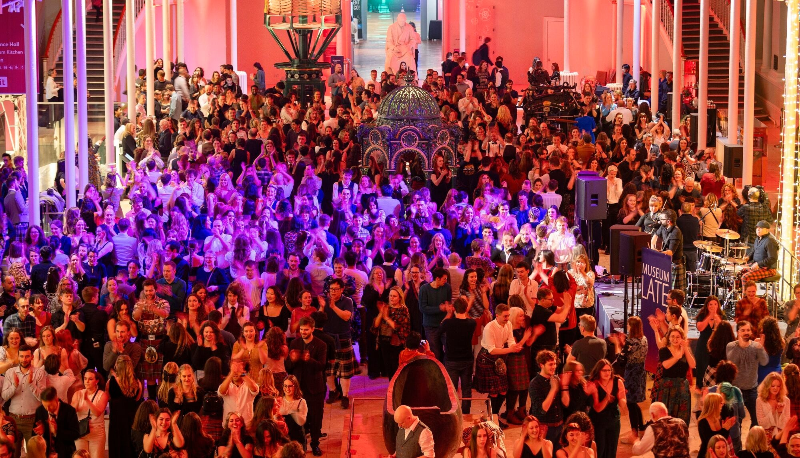
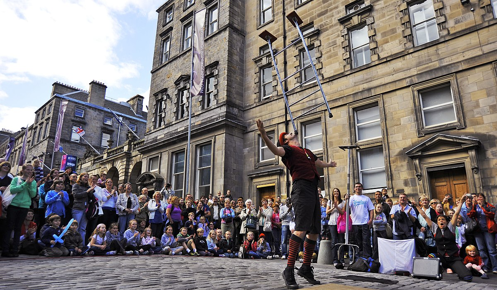
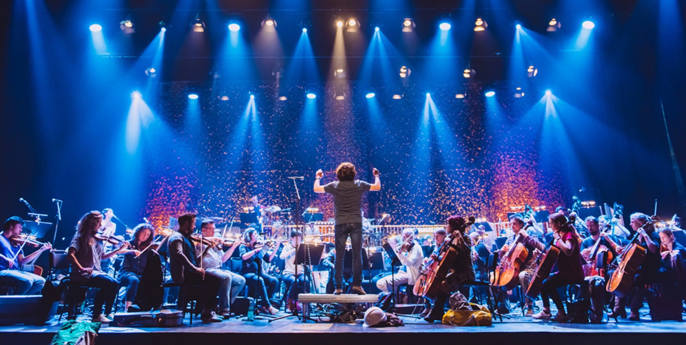
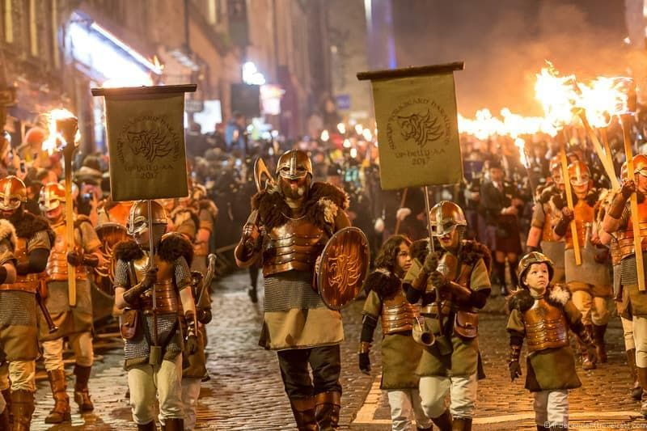
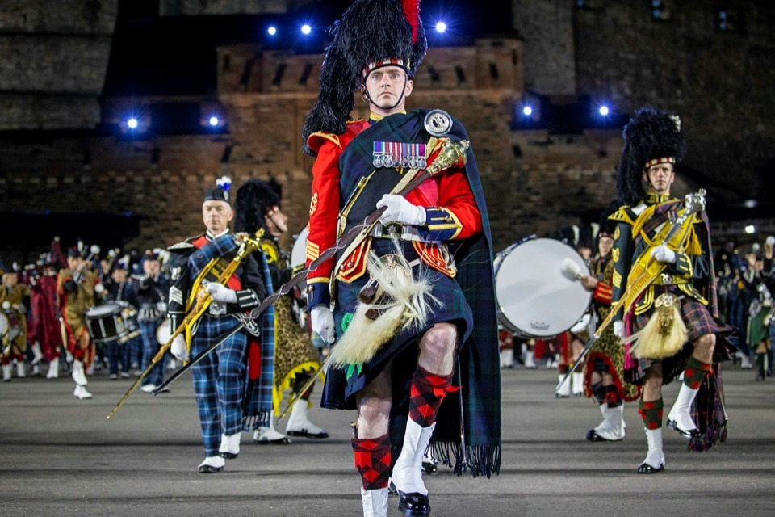
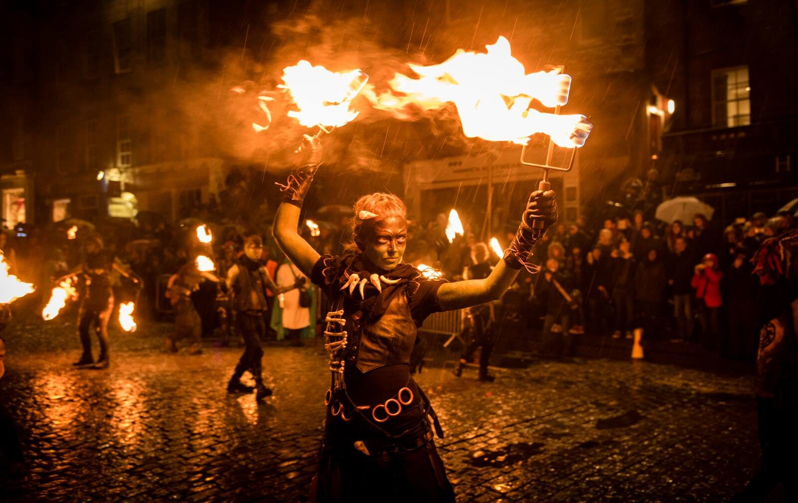
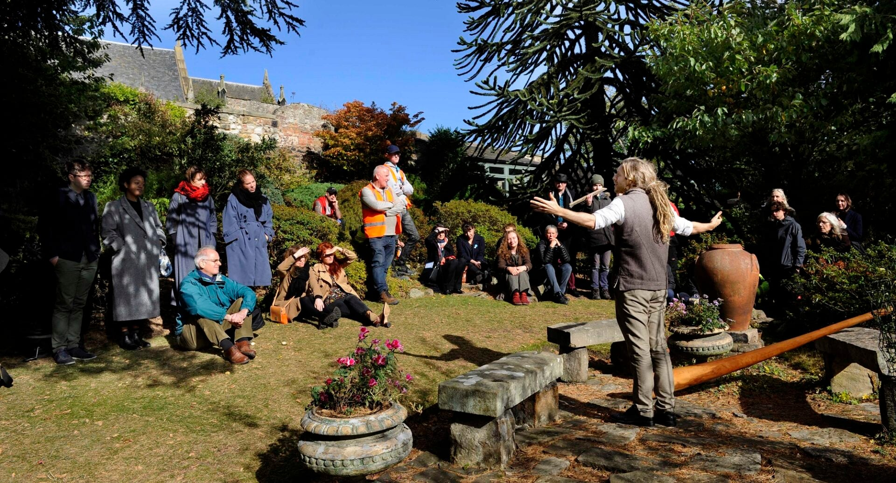

Events
Here in Edinburgh we have all sorts of fun events that range from famous art festivals and historical reenactments to food markets, live music, and family friendly celebrations.
Favorite Events & Festivals
Beltane Fire Festival

A vibrant celebration inspired by ancient Celtic traditions, featuring fire displays, drumming, costumes, and performances on Calton Hill to mark the arrival of summer.
Happens on April 30th on Calton Hill
Ceilidh Culture Festival
A lively festival showcasing traditional Scottish music, dance, and storytelling. Visitors can enjoy ceilidhs, folk concerts, workshops, and community celebrations.
Happens around Easter.
Edinburgh festival Fringe
The world's largest arts festival, offering thousands of performances in comedy, theatre, music, dance, and street entertainment across hundreds of venues.
Happens from August 1-25th.
Edinburgh International Festival
A prestigious arts celebration highlighting world-class opera, classical music, theatre, and dance, bringing global performers to Edinburgh every summer.
Happens from August 1-24th.
Edinburgh Hogmanay
Scotland's famous New Year celebration, filled with torchlight processions, street parties, live music, fireworks, and traditional ceilidh dancing.
Happens on December 31 (New Year's Eve)
Royal Edinburgh Military Tattoo
A spectacular series of military performances held on the Edinburgh Castle esplanade, featuring pipes, drums, precision marching, and breathtaking fireworks.
Happens in August, nightly during the festival period.
Samhuinn Fire Festival
A dramatic Halloween-night celebration inspired by Celtic folklore, telling the story of the changing seasons through fire, costume, dance, and immersive performance.
Happens on October 31st on Calton Hill
Scottish international Storytelling Festival
A celebration of Scotland's rich storytelling heritage, bringing together storytellers, musicians, and performers to share folklore, myths, and modern tales.
Happens in late October annually.